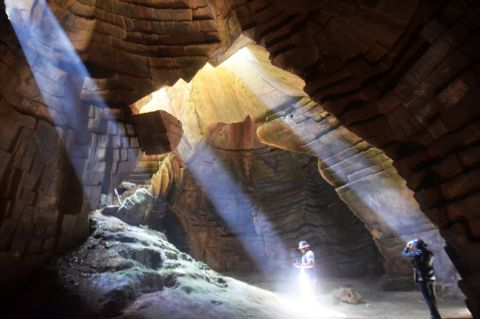
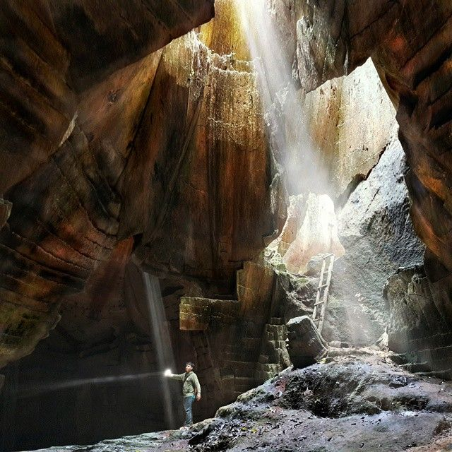
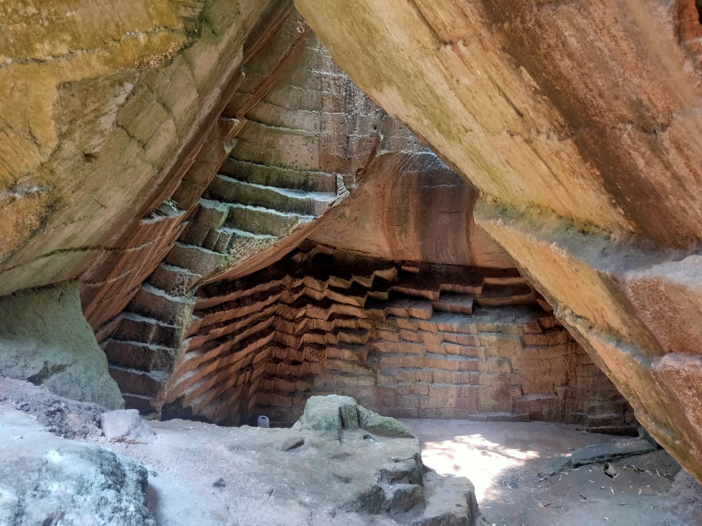
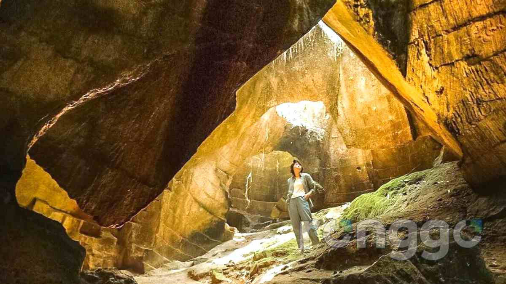
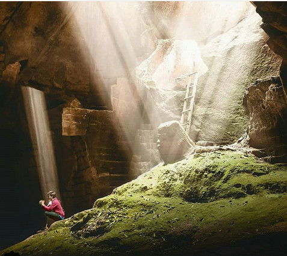
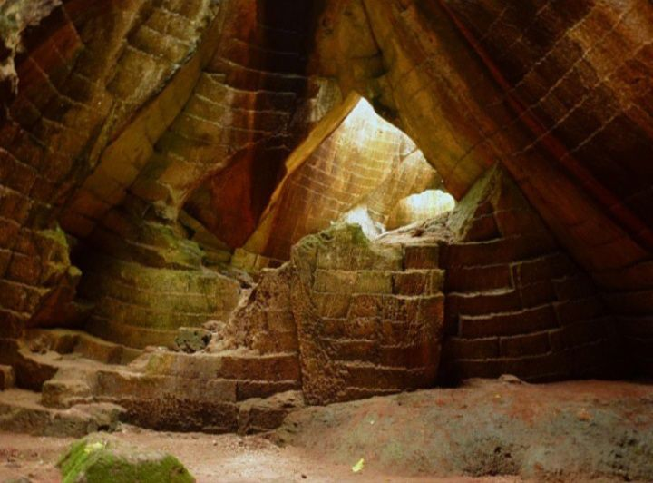
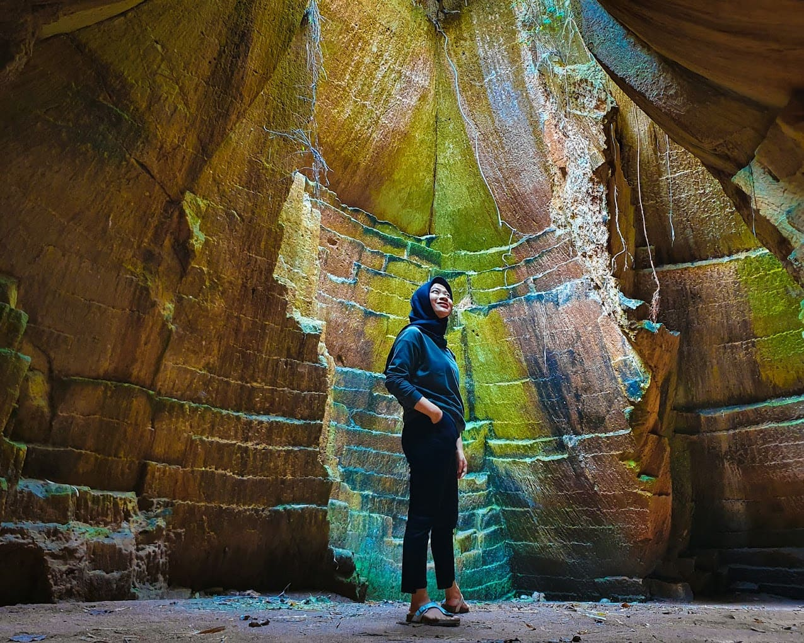
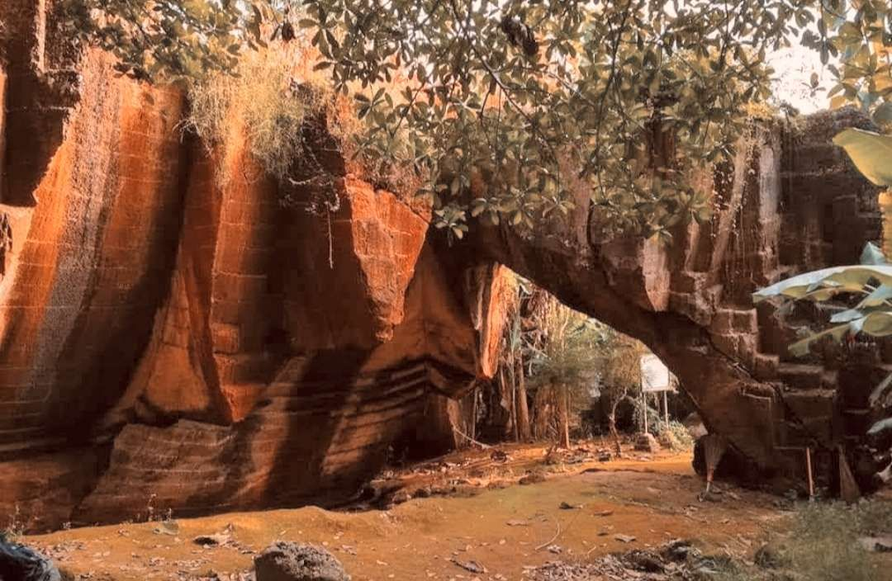
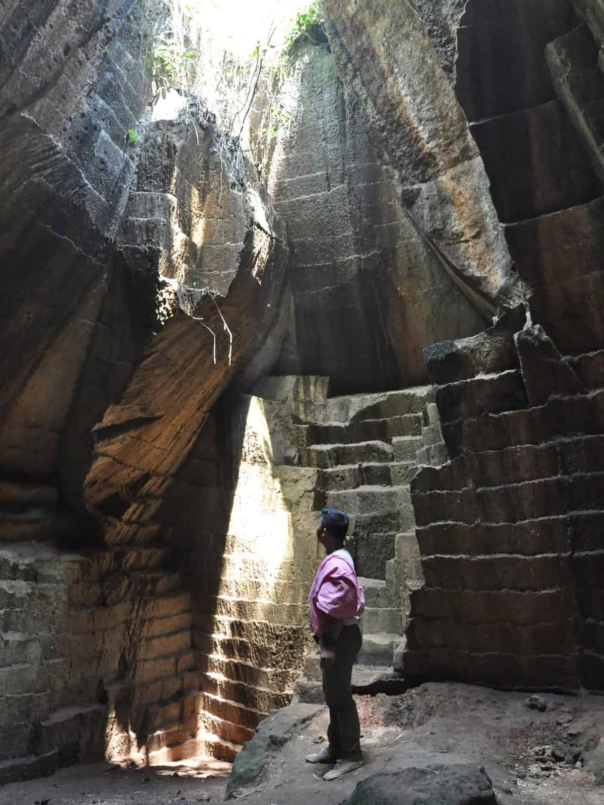

01
Ray Of Light
Sinar matahari yang masuk melalui celah atap goa membentuk berkas cahaya yang menjadi daya tarik visual utama.

Sebuah situs sejarah dan goa buatan kuno di Tuban yang memadukan pahatan batu, suasana alami, dan fenomena cahaya yang dikenal sebagai "Ray Of Light" atau "cahaya dari surga".
Sebuah situs sejarah dan goa buatan kuno di Dusun Suci, Desa Wangun, Kecamatan Palang, Kabupaten Tuban, Jawa Timur.

Goa Suci merupakan situs sejarah dan goa buatan kuno yang dikenal dengan sebutan "cahaya dari surga". Kawasan ini disebut sebagai peninggalan era Kerajaan Majapahit sekitar abad ke-14 dan dahulu berkaitan dengan aktivitas penambangan batu kapur.
Berbeda dengan goa alam yang terbentuk secara alami, karakter utama Goa Suci berada pada dinding batu yang dipahat membentuk pola berundak dan geometris.
Keunikan utama Goa Suci yang dicatat dalam blueprint adalah statusnya sebagai situs tambang kuno yang berkaitan dengan Majapahit. Dindingnya berupa hasil pahatan manusia dengan pola berundak geometris, bukan bentukan goa seperti stalaktit atau stalagmit.
Karakter batu, cahaya, vegetasi, dan lanskap pertanian menjadi bagian dari pengalaman visual Goa Suci.




Datang bukan hanya untuk melihat. Jelajahi lorong, amati batuan, abadikan cahaya, dan nikmati suasana alam.

Menjelajahi lorong yang teduh, mengamati formasi batu kapur, dan menikmati suasana yang tenang.

Mengabadikan perpaduan pahatan batu, cahaya alami, vegetasi, dan lanskap di sekitar Goa Suci.

Menikmati Ray Of Light yang masuk melalui celah goa dan membentuk berkas cahaya alami.

Menikmati tebing kapur, vegetasi hijau, dan hamparan lahan pertanian di sekitar kawasan.
Tidak hanya menyimpan bentuk batu yang unik, Goa Suci juga memiliki cerita rakyat, tradisi lisan, dan jejak sejarah.
Masyarakat sekitar juga mengenal kawasan ini sebagai Jurang Wayang karena bentuk dinding pahatannya yang megah dan berundak, menyerupai kelir dalam pertunjukan wayang.
Berdasarkan cerita rakyat dan tradisi lisan masyarakat setempat, Goa Suci dipercaya memiliki nilai sakral yang lebih dari sekadar bekas tambang batu kapur.
Konon, kawasan ini pernah digunakan sebagai lokasi petilasan dan tempat pertapaan oleh tokoh penting, raja, hingga bangsawan dari Kerajaan Majapahit yang ingin mencari ketenangan batin dan mendekatkan diri kepada Sang Pencipta.
Penyematan nama "Suci" dikaitkan dengan pandangan warga lokal yang menganggap kawasan tersebut sebagai tempat yang murni dan terbebas dari riuh urusan duniawi.
Blueprint juga mencatat adanya goresan angka Jawa kuno pada salah satu bagian dinding sebagai bagian dari jejak sejarah Goa Suci.
Perjalanan wisata juga dapat dilengkapi dengan mengenal kuliner khas Palang dan produk oleh-oleh khas Tuban.
.jpeg)
Blueprint mencatat beberapa kuliner yang dapat dikenalkan kepada wisatawan, yaitu Pelas Palang, Rujak Engos-Engos, dan bubur tradisional khas Palang.
Untuk oleh-oleh, Toko Asih Pusat Oleh-Oleh Khas Tuban dicantumkan sebagai salah satu persinggahan bagi wisatawan.
.jpeg)
Pelas Palang merupakan kuliner khas berbahan dasar jagung dengan cita rasa yang khas dari masyarakat pesisir.

Rujak khas pesisir Palang yang menggunakan rumput laut bersama sayuran dan bumbu khas dengan rasa pedas dan gurih.
.jpeg)
Bubur tradisional khas Palang disebut sebagai makanan sederhana berbahan lokal dengan cita rasa gurih dan lembut.
Toko Asih Pusat Oleh-Oleh Khas Tuban
Jalan RE. Martadinata No.13,
Karangsari, Kecamatan Tuban,
Kabupaten Tuban, Jawa Timur.
Kontak:
0821-3910-5758
Kisaran harga:
Rp7.000 – Rp66.000.
Siapkan perjalananmu dengan mengetahui informasi penting mengenai lokasi, akses, biaya parkir, fasilitas, dan waktu terbaik menikmati Ray Of Light.
Rencanakan perjalananmu melalui peta lokasi dan lihat video rekomendasi yang tercantum pada blueprint.
Dusun Suci, Desa Wangun, Kecamatan Palang, Kabupaten Tuban, Jawa Timur.
Buka Google Maps"Menjelajahi Goa Suci Tuban: Jejak Estetik Peninggalan Kerajaan Majapahit."
Video memperkenalkan nilai estetika, ukiran kuno, aksara Jawa Kuno, simbol sapi, dan jejak cerita Panji yang disebut dalam blueprint.
Sepuluh visual Goa Suci yang digunakan berdasarkan gambar yang tersedia pada file blueprint.

.jpeg)


Sumber gambar gallery: gambar yang terdapat pada file blueprint yang diberikan. Blueprint mencantumkan beberapa sumber gallery, antara lain Instagram @okyarisandi, Tugujatim.id, Superradio.id, NativeIndonesia.com, Pinterest, Mojokerto.iNews.id, Ronggo.id, SINDOnews.com, dan RRI.co.id.
Temukan cahaya, jelajahi pahatan batu, kenali cerita lokal, dan rasakan pesona Goa Suci Palang, Tuban.
Mulai Menjelajah